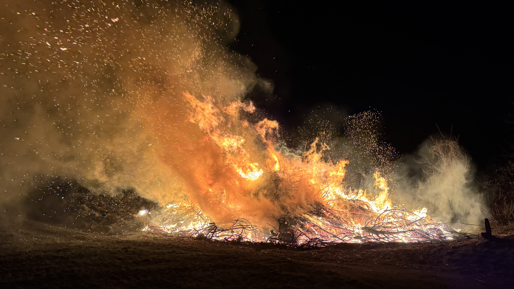
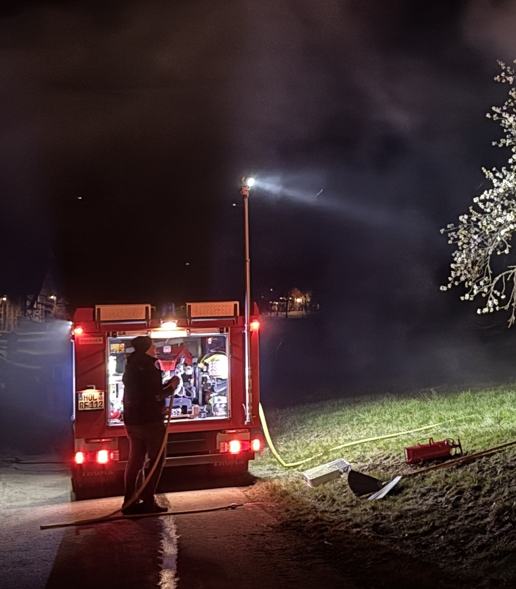

Osterfeuer in Reileifzen 2026
Lodernde Flammen am Ochsenbrink und Partystimmung in der Gänsetränke
Das diesjährige Osterfeuer in Reileifzen lockte bei hervorragendem Frühlingswetter zahlreiche Besucher aus nah und fern an. Trotz der sehr windigen Bedingungen, die den Funkenflug am Ochsenbrink zu einem beeindruckenden Schauspiel machten, war das Feuer in diesem Jahr besonders groß und weithin sichtbar. Die Feuerwehr hatte ein wenig zu tun, konnten die Flammen aber wie jedes Jahr sicher bändigen, während die Gäste das Spektakel aus nächster Nähe genossen.
Nachdem das Feuer am Ochsenbrink teilweise heruntergebrannt war, verlagerte sich das Geschehen wieder in die „Gänsetränke“. Dort wurde bei bester Stimmung für Jung und Alt bis weit nach Mitternacht ausgelassen gefeiert. Für das leibliche Wohl war bestens gesorgt: Es wurde viel gegessen und – wie es sich für ein ordentliches Osterfest gehört – noch ein wenig mehr getrunken. Die gute Laune der Gäste sorgte für einen unvergesslichen Abend, der die Gemeinschaft im Dorf einmal mehr zusammengeschweißt hat.

